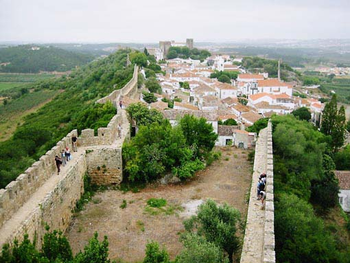
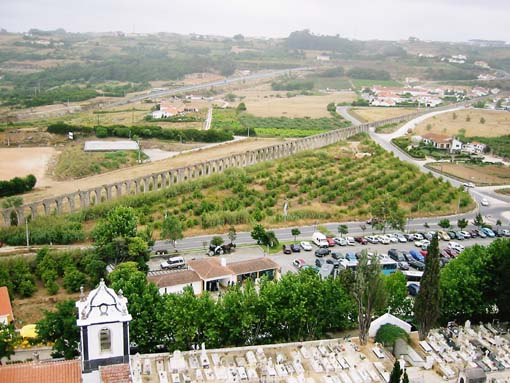

 
Obidos je eno bolje ohranjenih srednjeveških mest na Portugalskem. Leži
približno 75 kilometrov severno od Lizbone. Iz obzidja, ki obdaja celotno
mesto je lep razgled nad mestom in okolico, predvsem na akvadukt, ki
povezuje bližnje jezero z mestom.